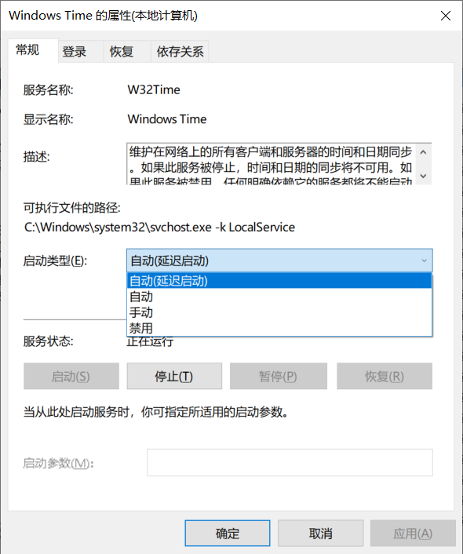
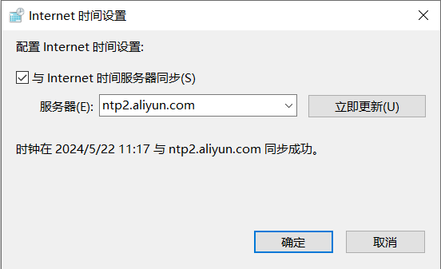

Windows与Linux双系统常见问题
Windows与Linux双系统常见问题解决
双系统八小时时间差
原因：
硬件时钟是存储在主板CMOS的时间，关机后该时钟仍然运行，主板电池为其供电。
系统时间：软件系统的时钟。系统启动后读取硬件时间，然后独立运行。
Local Time: 本地时间，只有Windows使用，Windows把硬件时间当作本地时间，或同步时间后把本地时间写入主板，即当地时间与硬件时间一致UTC: 世界标准时间，Unix-like系统多数会使用，UTC时间经过加减时区后得到本地时间，操作系统中显示的时间与硬件时钟相差相应的时区，如北京时间是UTC+8，系统中的时间是硬件时间加上8小时
当安装双系统后，两者同步时间后都会对主板时钟进行写入，而操作系统一般不会在开机时自动同步时间
解决方法
修改系统的计时方式
- 将Windows的计时方式改为
UTC- 在
PowerShell中运行以下命令：
1
reg add “HKEY_LOCAL_MACHINE\System\CurrentControlSet\Control\TimeZoneInformation” /v RealTimeIsUniversal /d 1 /t REG_QWORD /f
- 在
- 将Linux的计时方式改为
Local Time（这个方法好像没有生效）- 以
root用户运行以下命令（如果想改回UTC，则将--localtime改为--utc）
1
hwclock -s --localtime
- 以
系统启动联网后自动同步时间
Linux系统
在Linux中，联网后一段时间，systemd-timesyncd服务会自动同步时间，不需要额外的操作设置
Windows系统
Win+r运行services.msc，打开服务管理页面
找到Windows Time服务，将启动类型修改为自动（延迟启动）

打开控制面板，找到时钟和区域，点击日期和时间
切换到Internet时间标签，点击更改设置，将服务器修改为可用的NTP服务器，比如这里我选择了阿里云的服务器ntp2.aliyun.com，并勾选上与Internet时间服务器同步

以后启动电脑并联网后，时间将会自动同步